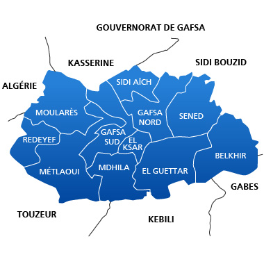

Gafsa
Gafsa : une ville au cœur de l'histoire tunisienne Située dans le sud-ouest de la Tunisie, Gafsa est l'une des villes les plus anciennes et les plus riches en histoire du pays. Autrefois appelée Capsa, elle est connue pour son patrimoine historique, ses paysages naturels et ses traditions. Son histoire remonte à la préhistoire, notamment à la civilisation capsienne, qui a marqué l'Afrique du Nord. Au fil des siècles, Gafsa a connu plusieurs civilisations, notamment les Romains et les Byzantins, qui ont laissé des traces de leur passage. Aujourd'hui, elle est également connue pour ses oasis, ses sources d'eau et ses importantes ressources en phosphate. Gafsa représente ainsi un véritable témoignage de la richesse culturelle et historique de la Tunisie.
